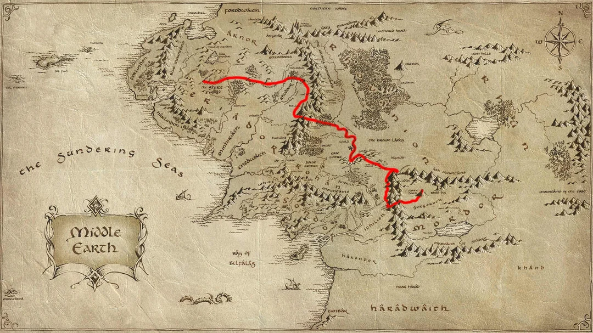

📜 The Challenge
This project tracks real-world running distance on Strava and maps it onto Frodo’s journey from The Shire to Mount Doom.
⚙️ How it works
- Strava API fetches all activities
- Total distance since the start date is calculated
- Progress is compared against Middle-earth milestones
- The latest activity is updated automatically
🗺️ Progress
Progress updates automatically after each Strava activity. The mileage data is sourced from: MIT Simply Walk Into Mordor Challenge .
See the full journey in the Milestones page.